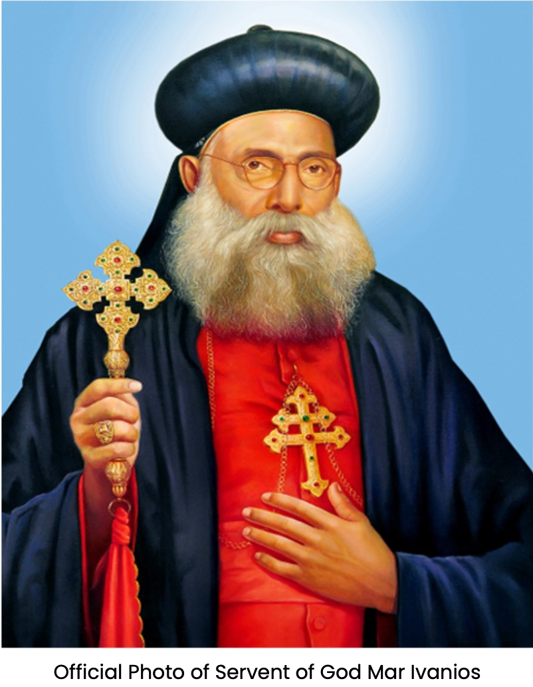

A Mission Born
in Faith
The Syro Malankara Catholic Mission in Singapore traces its beginnings to 2015, when His Excellency Most Rev. Dr. Thomas Mar Anthonios engaged with the Archdiocese of Singapore regarding the spiritual needs of the Malankara faithful.
These efforts culminated in 2018 under the guidance of His Beatitude Moran Mor Baselios Cardinal Cleemis Catholicos. In November 2018, His Excellency Most Rev. Dr. Yoohanon Mar Theodosius visited Singapore and celebrated the first Malankara Holy Qurbana in the country, at Church of St Stephen.
Today, St Mary's stands as a vibrant and growing faith community — rooted in tradition, united in worship — with over 150 members spanning all age groups.
Mission Timeline
The Apostolic Foundation — St Thomas in India
In divine providence, India was blessed to have an Apostolic Foundation of the Church through the evangelization mission of St. Thomas, one of the twelve Apostles of Jesus Christ. St. Thomas first landed at Malliankara (Kodungallur) and started his mission in Malankara — the southern tip of the Indian peninsula. Because of this Apostolic Tradition, the ecclesial community that originated was known as "The St. Thomas Christians" or "Malankara Nazranikal."
The Church of St. Thomas in India developed her own ecclesial, liturgical, spiritual and administrative traditions — in communion with the Universal Church through ecclesial ties with the Churches of the Middle East. It subsequently came in contact with the Syro-Chaldean Church and adopted the East Syrian Liturgy.
The Malankara Reunion Movement — 1930
It was in a contentious ecclesiastical context that Fr. P.T. Geevarghese (later Archbishop Mar Ivanios) played a vital role in the life of the Malankara Church. Taking to sanyâsa, he founded the Order of the Imitation of Christ — the Bethany Ashram — in 1919, from which winds of spiritual fervour and renaissance blew across Malankara.
After prolonged negotiations with Rome, Mar Ivanios and Bishop Jacob Mar Theophilos made their profession of faith before the Bishop of Quilon and entered into full communion with the Catholic Church on 20 September 1930 — a historic event in the Universal Church.
From Archdiocese to Major Archiepiscopal Church
On 10 February 2005, Pope John Paul II raised the Church to the status of a Major Archiepiscopal Church through the Papal Bull Ab ipso Sancto Thoma — the crowning event of all the ecclesial communion endeavours since 1653.
Learn More About the Church

Mar Ivanios
Born P.T. Geevarghese in 1882 at Puthiyakavu in Kerala, Mar Ivanios was a theologian, visionary, and mystic whose entire life was devoted to the spiritual unity of the Christian Church. After taking sanyasa and founding the Bethany Ashram in 1919, he embarked on a historic journey toward full communion with Rome.
On 20 September 1930, alongside Bishop Jacob Mar Theophilos and companions, he made his profession of Catholic faith before the Bishop of Quilon — reuniting the Malankara faithful with the Holy See after nearly three centuries of separation.
He subsequently became the first Metropolitan-Archbishop of Trivandrum, tirelessly building up the newly established Syro Malankara Catholic Church until his death on 15 July 1953. The cause for his canonization has been formally opened; he is venerated today as the Servant of God.
"Seventy years ago, Metropolitan Archbishop Mar Ivanios, Bishop Mar Theophilos and their companions entered into full communion with the See of Peter, because they were profoundly convinced of the truth… They understood that 'the Church is one, the Church of Christ between East and West.'"— His Holiness Pope John Paul II, addressing the Syro Malankara Catholic Community, Rome, 2000